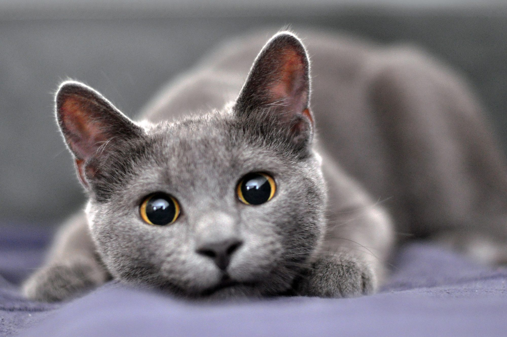

Welcome to Catland!
Here in this site i want to introduce some of the most beautiful cat breeds, especially my personal favorite, the Russian Blue breed.
Russian Blue
Gentle and family friendly type with a huge
need of attention when his/her owner is around
but he wont destroy your house if you're not home.
Her/his coat is very soft, so generally this type
is a lovely furball. If you got kids, there's no
better choiche than this breed in my opinion.
Bengal
Bengal cats have a feral and exotic look
but make ideal feline pets. This breed is noted
for its spotted coat and muscular build.
Because of its feral origins, the Persian cat is
much larger in size compared to your average pet cat.
Personality-wise, Bengals are affectionate,
child- and dog-friendly, and very social. In addition,
they are energetic and extremely playful.
Ashera
This exotic breed is a hybrid of
the Asian leopard cat, a domestic housecat,
and the African serval. Personality-wise, it is loyal,
affectionate, and very intelligent.
Despite the controversy about its genetics,
the Ashera is the most prized pet cat in the world
and you can take one home if you can cough up
the astronomical price.
Savannah
A hybrid of the wild African serval cat
and a domestic Persian cat.
Like dogs, Savannah cats are extremely loyal.
They are open to socializing with other pets and strangers
if trained at an early age. In addition, they are
smart, curious, playful, and active, and need plenty of exercise.
Sphynx
The Sphynx is known for its hairless look caused by a
natural genetic mutation, which created a healthy
and strong breed. Sphynx cats love socializing and are
friendly with strangers. However, they need to be
bathed often as they pile up body oils on their skin.
In addition, they are not comfortable outdoors.
Persian
The Persian cat is widely recognized by its mushy face
and fluffy hair. It enjoys showing affection and cuddling,
but is not very vocal. Their furry coat needs daily grooming
and brushing. This breed comes in multiple variations and colors.